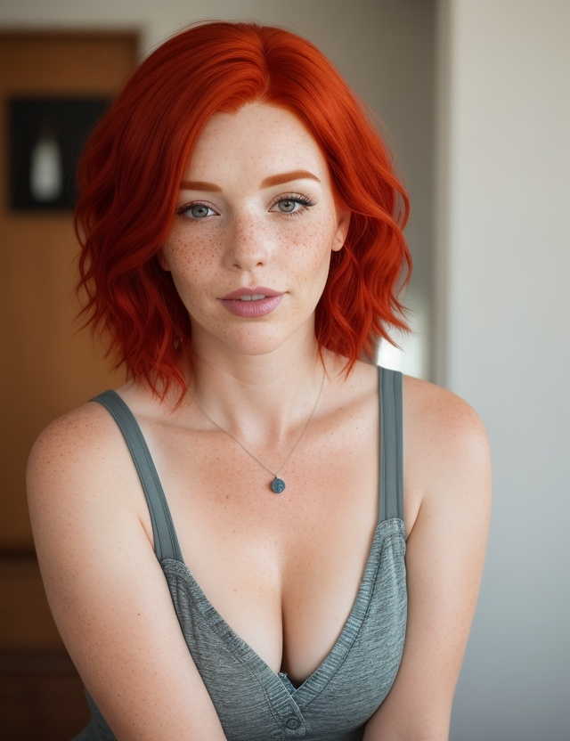

The resolution is 640 x 832px, created on 15/12/23 at 2:27 PM. The guidance scale is 7. There is no step count. The sampler used is Leonardo's Absolute Reality. The seed number is 980301312. There is no preset. There is no prompt magic. The initial strength is "No init image". There is no high contrast.
Prompt - An adult woman with vibrant red hair and freckles on her face. Highlight her features, emphasizing the texture of her skin and the lively color of her hair. Frame the shot to showcase her neckline.
Negative Prompt - bad eyes, bad clothes, extra limbs
The resolution is 640 x 832px. It was created on 04/12/23 at 7:14 AM. The sampler used was Leonardo's Leonardo Vision XL. The seed is 944491776. No preset was applied. There is no prompt magic. The initial strength is not applicable as there is no init image. There is no high contrast.
Prompt - Chuck Close art, Hyperrealism, body shot, woman, red hair, freckle, lust, decollete, adult, plain background.
Negative Prompt - 3D, Absent limbs, Additional appendages, Additional digits, Additional limbs, Altered appendages, Asymmetric, Asymmetric ears, Bad anatomy, Bad ears, Bad eyes, Bad face, Bad proportions, Beard, Broken finger, Broken hand, Broken leg, Broken wrist, Cartoon, Childish, Cloned face, Cloned head, Collapsed eyeshadow, Combined appendages, Conjoined, Copied visage, Corpse, Cripple, Cropped head, Cross-eyed, Depressed, Desiccated, Disconnected limb, Disfigured, Dismembered, Disproportionate, Double face, Duplicated features, Eerie, Elongated throat